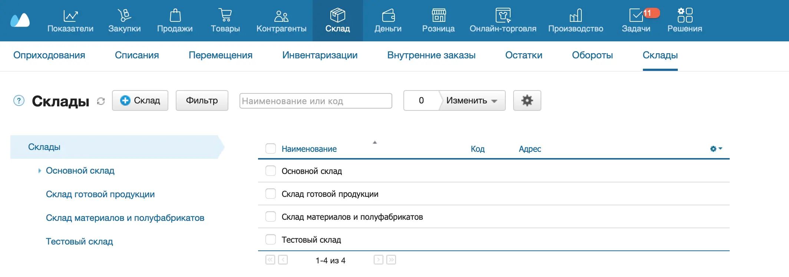
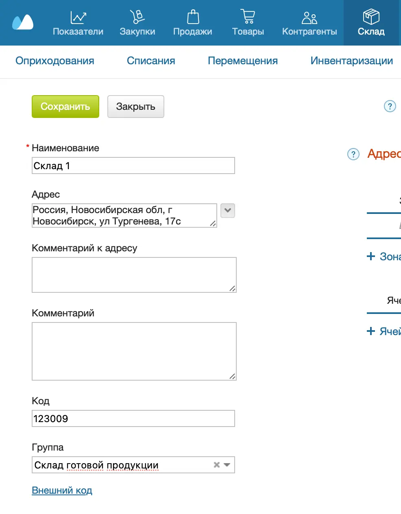
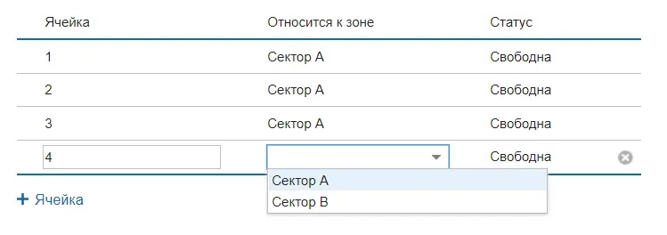
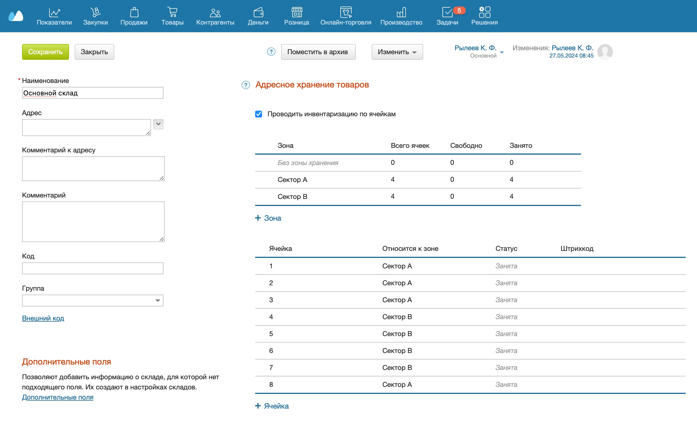
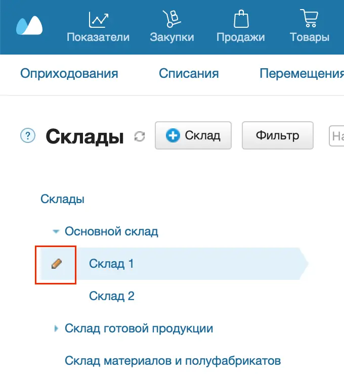

Склады помогают вести учет остатков товаров. Склад может быть отдельным или включать несколько других складов. Тогда основной склад — родительский, а склады в его составе — дочерние. Учет по каждому складу ведется раздельно.
Создание склада
Максимальное количество складов в одном аккаунте — 2000. Если лимит достигнут, создать новый склад не получится.
Можно создать один или несколько складов. Чтобы создать склад:
- Перейдите в раздел Склад → Склады.

- Нажмите на кнопку +Склад — откроется карточка склада.
- Заполните поле Наименование склада. При необходимости укажите дополнительно Адрес, Комментарий к адресу, Комментарий, Код, Внешний код.

- Чтобы сделать склад дочерним, в поле Группа выберите родительский склад, к которому он будет относиться.
- Чтобы разделить склад на зоны хранения, нажмите +Зона и введите ее название. Зону хранения можно переименовать и удалить. Для склада можно создать не более 10 зон.

- Чтобы добавить ячейки для адресного хранения, нажмите +Ячейка, введите ее название и выберите зону хранения в выпадающем меню.

- Если на складе организовано адресное хранение, по умолчанию инвентаризация проводится по ячейкам. Чтобы проводить инвентаризацию по складу, снимите флажок Проводить инвентаризацию по ячейкам.
- Нажмите на кнопку Сохранить вверху.

Редактирование склада
- Выберите нужный склад из списка и нажмите на карандаш слева от названия.

- В открывшемся окне внесите нужные изменения.
- Нажмите на кнопку Сохранить вверху.
Если склад не используется, его можно перевести в архив. Информация по нему будет скрыта, но останется в системе. Данные всегда можно достать из архива и продолжить работу.